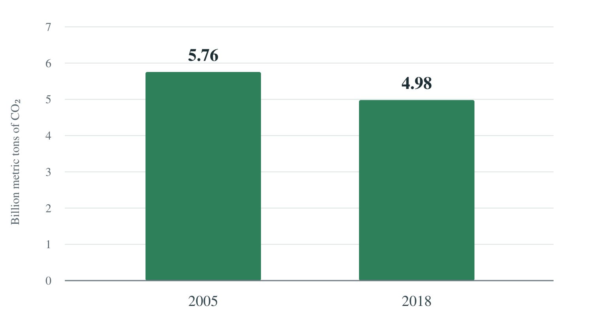
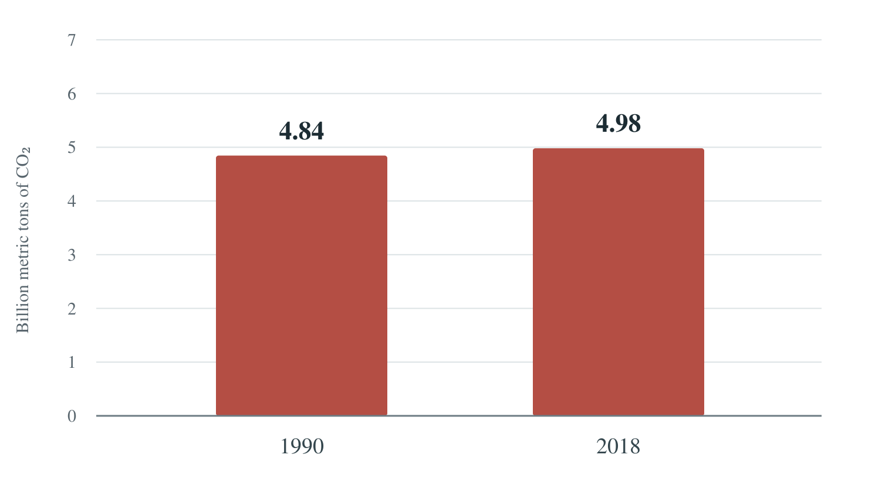

U.S. carbon emissions: two different stories
Proposition: By 2018, the United States had made meaningful progress in reducing its annual CO₂ emissions.
These charts look at U.S. carbon dioxide (CO₂) emissions through 2018 and argue two sides of the same claim. Both show how much CO₂ the country released in a year.
FOR the Proposition
A 13.5% drop shows real progress
Total U.S. CO₂ emissions per year · 2005 and 2018
−13.5% compared with 2005

By 2018, the U.S. was releasing about 775 million fewer metric tons of CO₂ per year than in 2005. A drop of that size makes a strong case for meaningful progress.
Design Decisions and Rationale:
Scores range from −2 (fully deceptive) to +2 (fully earnest, meaning honest). A score of 0 is neutral.
-
Start in 2005 — Score: −1.0
I chose 2005 because its higher emissions make the drop by 2018 stand out. Starting in 1990 would show an increase, so choosing 2005 helps the positive argument while leaving out a less favorable comparison.
-
Show only two years — Score: −1.0
I used two bars to make the drop easy to see at a glance, with taller bars showing higher emissions. A line chart would show the ups and downs in between, but these bars keep attention on the overall improvement and leave that detail out.
-
Show the percent and the amount — Score: +1.5
About 775 million metric tons sounds like a lot on its own, so I included the 13.5% drop to put that number in context. Together, they give a clearer sense of the change, though they don't tell us whether it was enough to meet a climate goal.
-
Start the scale at zero — Score: +2.0
I kept the scale at 0 to 7 billion metric tons in both charts so the bar heights can be compared fairly. Starting above zero would make the drop look more dramatic; using zero makes the difference less striking but keeps the bar lengths accurate.
-
Use green and a positive title — Score: −0.5
Green and the words “real progress” encourage readers to see the decrease as good news. A title like “U.S. emissions in 2005 and 2018” would be more neutral; the chosen title adds a judgment about how much the drop matters.
AGAINST the Proposition
28 years later, emissions were still higher
Total U.S. CO₂ emissions per year · 1990 and 2018
+2.8% compared with 1990

After 28 years, annual emissions were still above their 1990 level. From this longer view, it is hard to call the change meaningful progress in cutting the country's annual emissions.
Design Decisions and Rationale:
Scores range from −2 (fully deceptive) to +2 (fully earnest, meaning honest). A score of 0 is neutral.
-
Start in 1990 — Score: −1.5
I chose 1990 instead of 2005 because it turns the comparison into an increase and makes progress look weaker. This longer view supports the opposing argument, but it can also lead readers to overlook the real decrease after 2005.
-
Leave out 2005 — Score: −1.5
Leaving out 2005 keeps readers from seeing how much emissions fell after that year. Including all three years would give a fuller picture, but using only 1990 and 2018 makes the argument against the claim more convincing.
-
Keep the same measure — Score: +1.0
I kept total emissions instead of switching to emissions per person, so both charts answer the same question about the country's annual output. Totals support the argument that the overall amount had not fallen below 1990, though they don't account for population growth or changes in the economy.
-
Keep the small rise in proportion — Score: +2.0
The shared 0–7 scale makes it clear that the 2.8% increase is fairly small, while the labels help readers see the values. Zooming in on the tops of the bars would strengthen the visual impact, but I kept the full scale so the argument depends on the comparison rather than an exaggerated gap.
-
Use red and the word “still” — Score: −1.0
I used red, “28 years later,” and “still higher” to suggest that more progress should have happened over that time. A neutral title like “U.S. emissions in 1990 and 2018” would avoid that judgment, but it would also make the opposing argument less persuasive.
Final Reflection
For the checkpoint, I explored four charts. I narrowed them down to these two and refined the claim to focus on progress by 2018, so each chart can argue a different side using its own starting year. Calculating the differences was straightforward. The harder part was deciding what “meaningful progress” should mean, since the data doesn't define it. The surprising part is that both charts end with the same 2018 value, yet leave very different impressions.
The first chart treats the drop since 2005 as evidence of progress. The second judges progress against 1990 and suggests the country had not gone far enough. These are competing judgments, not contradictory calculations: the longer comparison doesn't erase the later drop. Leaving out other years helps each chart make its case. Keeping the same scale makes the bar sizes fair, but it doesn't remove the effect of choosing certain dates.
To me, ethical analysis and visualization means using accurate numbers and giving readers enough context to judge the message. Focusing on a relevant comparison is acceptable when its dates and limits are clear. It becomes misleading when one comparison is presented as the whole story or a title treats an opinion as a proven fact. For a more balanced view, I'd show every year and use a specific climate goal to judge progress. I also wouldn't claim these charts explain why emissions changed.
Data and Sources
I used the 2021 version of the World Bank climate-change dataset linked in the course for both charts. This is the climate-change file from the course's Human Development Indicators option.
I selected United States (USA) and used the column average_value_CO2
emissions (kt) for 1990, 2005, and 2018. These are historical figures, so they don't
describe current emissions.
Numbers used in the charts:
- 1990: 4,844,990 kt, or 4.84499 billion metric tons.
- 2005: 5,756,080 kt, or 5.75608 billion metric tons.
- 2018: 4,981,300 kt, or 4.98130 billion metric tons.
The original values are in kilotons (kt), where one kiloton equals 1,000 metric tons. I divided those values by 1,000,000 to show them in billions of metric tons. The labels are rounded to two decimal places, but I used the full values for the calculations.
Percent change = (ending value − starting value) ÷ starting value × 100
2005 to 2018: The change was −13.4602%, which rounds to −13.5%. Emissions fell by 774,780 kt.
1990 to 2018: The change was +2.8134%, which rounds to +2.8%. Emissions rose by 136,310 kt.
The differences compare emissions in individual years; they are not the total emissions saved or added across the whole period. The data covers CO₂ rather than all greenhouse gases. These comparisons alone can't show which policies caused the changes or whether a climate goal was met.